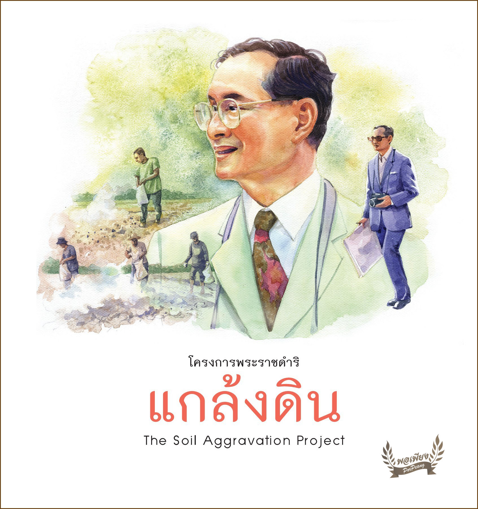
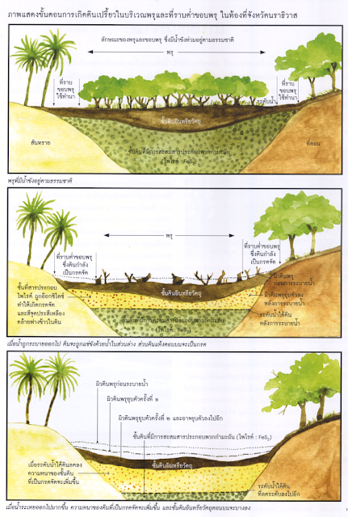
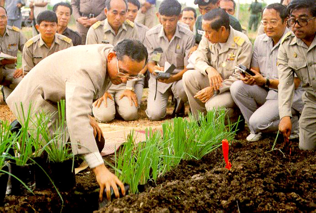

โครงการแกล้งดิน
ประวัติความเป็นมา

แกล้งดิน หมายถึง กระบวนการเร่งปฏิกิริยาเคมีในดินซึ่งมีศักย์หรือความพร้อมจะเป็นดินเปรี้ยว ให้เปรี้ยวรุนแรงมีกรดจัด
จากนั้นจึงปรับปรุงโดยเติมปูนขาวหรือด่าง ร่วมกับการใช้ระบบชลประทานนำน้ำมาเจือจางดินเปรี้ยวจนสามารถเพาะปลูกได้
เป็นแนวพระราชดำริที่พระบาทสมเด็จพระเจ้าอยู่หัวพระราชทานเมื่อพุทธศักราช 2527 เพื่อการทดลองที่ศูนย์ศึกษาการพัฒนาพิกุลทองอันเนื่องมาจากพระราชดำริ
เมื่อได้ผลแล้วจึงนำไปประยุกต์ใช้ในพื้นที่ดินเปรี้ยว เช่น พรุในจังหวัดนราธิวาส และพื้นที่ดินเปรี้ยวในจังหวัดนครนายก เป็นต้น การแกล้งดิน คือการเร่งปฏิกิริยาเคมีของดินที่มีแร่กำมะถัน
หรือสารประกอบไพไรต์ (Pyrite) โดยทำให้ดินแห้งและเปียกสลับกัน เมื่อดินแห้งสัมผัสกับอากาศ ทำให้แร่กำมะถันกลายเป็นออกไซด์ของเหล็กและซัลเฟต
เมื่อทำให้ดินเปียกซัลเฟตผสมกับน้ำกลายเป็นกรดอีกครั้ง เมื่อดินถูกแกล้งสลับไปมาจนกลายเป็นดินที่เปรี้ยวรุนแรงหรือเป็นกรดจัด จากนั้นจึงปรับปรุงดินโดยเติมฝุ่นปูนซึ่งเป็นด่าง
ร่วมกับการใช้ระบบชลประทานควบคุมระดับน้ำใต้ดินและนำน้ำมาเจือจางดินเปรี้ยวจนสามารถเพาะปลูกข้าว พืชไร่เช่น ข้าวโพด ผลไม้เช่นเสาวรสและเลี้ยงปลาเช่นปลานิลได้
ทฤษฎีต้นกำเนิด

หลายคนคงเคยได้ยินเรื่องของโครงการอันเนื่องมาจากพระราชดำริกันมาบ้างแล้ว ชื่อของโครงการแต่ละโครงการล้วนสะดุดหูชวนให้สนใจติดตามว่าเป็นโครงการอะไร
ซึ่งแต่ละชื่อของโครงการล้วนเป็นเหตุเป็นผลทั้งสิ้น บางชื่อก็มีความหมายตรงตามชื่อ โดยมิต้องอ้อมค้อมตีความ เช่น โครงการแก้มลิง คือการนำน้ำในขณะที่มีมาก ๆ
มาพักไว้ที่บ่อเก็บและค่อย ๆ ระบายออกไป โดยใช้หลักทฤษฎีแรงโน้มถ่วงของโลก เช่นเดียวกับลิง เมื่อได้รับอาหารมากก็จะรีบกินทั้งหมดแล้วเอาไปเก็บไว้ที่กระพุ้งแก้ม
จากนั้นค่อย ๆ นำออกมาเคี้ยวบริโภคภายหลัง หรือโครงการ แกล้งดิน ก็มีความหมายหรือภารกิจที่ทำตรงตามชื่อโครงการ คือทรงใช้วิธีแก้ไขดินที่เปรี้ยวจัดให้ใช้ประโยชน์ทางการเกษตรได้โดยวิธี
"แกล้งดิน"
วิธีปรับปรุงดิน

1. แก้ไขโดยวิธีการควบคุมระดับน้ำใต้ดิน พยายามคุมน้ำใต้ดินให้อยู่เหนือชั้นดินเลนซึ่งมีสารประกอบไพไรต์ เป็นการป้องกันมิให้สารประกอบไพไรต์ทำปฏิกิริยากับออกซิเจนหรือถูกออกซิไดซ์ โดยมีขั้นตอนดังนี้
1.1 วางระบบการระบายน้ำทั่วทั้งพื้นที่
1.2 ระบายน้ำเฉพาะส่วนบนออก เพื่อชะล้างกรด
1.3 รักษาระดับน้ำในคูระบายน้ำให้อยู่ในระดับไม่ต่ำกว่า 1 เมตรจากผิวดินตลอดทั้งปี
2. แก้ไขโดยวิธีปรับปรุงดิน ตามแนวพระราชดำริ โครงการนี้จะมีวิธีปรับปรุงดิน 3 วิธีอาจเลือกใช้ได้ตามความเหมาะสมและตามสภาพของดิน คือ
วิธีการที่ 1 ใช้น้ำชะล้างความเป็นกรด ดำเนินการตามขั้นตอนดังนี้
- ใช้น้ำชะล้างดินเพื่อล้างกรด ทำให้ค่า pH เพิ่มขึ้น โดยวิธีการปล่อยน้ำให้ท่วมขังแปลงแล้วระบายออก ทำเช่นนี้ประมาณ 2-3 ครั้ง โดยเว้นให้ห่างกันประมาณ 1-2 สัปดาห์
- ดินจะเปรี้ยวจัดในช่วงดินแห้งหรือในฤดูแห้ง ดังนั้น การชะล้างควรเริ่มในฤดูฝนเพื่อลดปริมาณการช้ำชลประทาน การใช้น้ำชะล้างความเป็นกรดต้องกระทำต่อเนื่องและต้องหวังผลในระยะยาวมิใช่ กระทำเพียง 1 หรือ 2 ครั้งเท่านั้นวิธีนี้เป็นวิธีที่ง่ายที่สุด
แต่จำเป็นต้องมีน้ำมากพอที่จะใช้ชะล้างดินควบคู่ไปกับการควบคุมระดับน้ำใต้ ดินให้อยู่เหนือชั้นดินเลนที่มีสารประกอบไพไรต์มาก
- เมื่อดินคลายความเปรี้ยวลงแล้วจะมีค่า pH เพิ่มขึ้น อีกทั้งสารละลายเหล็กและอะลูมินัมที่เป็นพิษก็เจือจางลงจนทำให้พืชสามารถ
เจริญเติบโตได้ดีถ้าหากใช้ปุ๋ยไนโตรเจนและฟอสเฟตเช่วยก็สามารถเจริญเติบโต ได้ดีถ้าหากใช้ปุ๋ยในโตรเจนและฟอสเฟตช่วยก็สามารถทำการเกษตรได้
วิธีการที่ 2 การแก้ไขดินเปรี้ยวโดยใช้ปูนผสมคลุกเคล้ากับหน้าดิน คือ
-ใช้วัสดุปูนที่หาได้ง่ายในท้องที่ เช่น ใช้ปูนมาร์ล (mar) สำหรับภาคกลาง หรือปูนฝุ่น ( lime dust ) สำหรับภาคใต้ หว่านให้ทั่ว 1-4 ตันต่อไร่แล้วไถแปรหรือพลิกกลบคืน ( ปริมาณของปูนที่ใช้ขึ้นอยู่กับความรุนแรงในความเป็นกรดของดิน )
วิธีการที่ 3 การใช้ปูนควบคู่ไปกับการใช้น้ำชะล้างและควบคุมระดับน้ำใต้ดินเป็นวิธีการที่ สมบูรณ์ที่สุดและใช้ได้ผลมากในพื้นที่ซึ่งดินเป็นกรดจัดรุนแรงหรือถูกปล่อย ทิ้งให้รกร้างว่างเปล่าเป็นเวลานาน
- หว่านปูนให้ทั่วพื้นที่ โดยใช้ปูน 1-2 ตันต่อไร่ แล้วไถกลบ
- ใช้น้ำชะล้างความเป็นกรดออกจากหน้าดิน
- ควบคุมน้ำใต้ดินให้อยู่เหนือชั้นดินเลนที่มีสารประกอบไพไรต์ มากเพื่อป้องกันมืให้ทำปฏิกริยากับออกซิเจน เพราะจะทำดินกลายเป็นกรด
3. การปรับสภาพพื้นที่
เนื่องจากสภาพพื้นที่ดินเปรี้ยวในแถบนี้เป็นป่าพรุ มีลักษณะเป็นที่ราบลุ่ม จึงทำการระบายน้ำออกจากพื้นที่ได้ลำบาก จำเป็นต้องมีการปรับสภาพพื้นที่ ซึ่งโดยทั่วไปทำกันอยู่ 2 วิธี คือ
3.1 การปรับผิวหน้าดิน โดยการทำให้ผิวหน้าดินลาดเอียงเพื่อให้น้ำไหลออกไปสู่คลองระบายน้ำได้หรือ ถ้าเป็นการทำนาก็ จัดตกแต่งแปลงนาและคันนาให้สามารถเก็บกักน้ำและสามารถระบาย น้ำออกได้ถ้าต้องการ
3.2 การยกร่องปลูกพืช วิธีนี้ใช้สำหรับพื้นที่ที่จะทำการปลูกพืชไร่ พืชผัก ไม้ผล หรือไม้ยืนต้น แต่วิธีนี้จำเป็นจะต้องมีแหล่ง น้ำชลประทาน เพราะจะต้องขังน้ำไว้ในร่องเพื่อใชถ่ายเทเปลี่ยน เมื่อน้ำในร่องเป็นกรดจัด
ในการขุดร่องนี้ เกษตรกรจะต้องทราบว่าในพื้นที่นั้นมีดินชั้นเลนซึ่งเป็นดินที่มีสารประกอบไพ ไรต์มากอยู่ลึกในระดับใด เพราะเมื่อขุดร่องจะให้ลึกเพียงระดับดินเลนนั้น โดยทั่วไปจะลึกไม่เกิน 100 เซนติเมตร